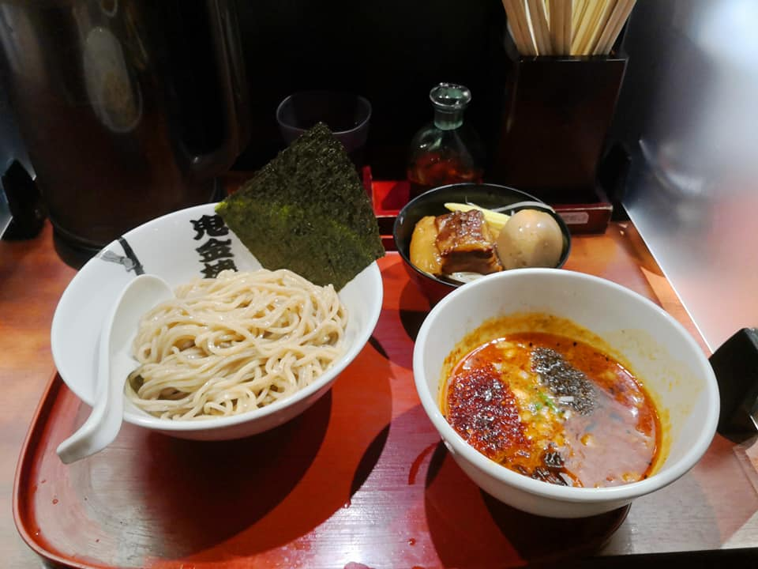

It has been kept its top position of Best Ramen Restaurant in Taiwan from Taiwan Ramen Club for 2 years, as the rating started from 2019.
Signature dish. You could choose how much spicy and how much tingly separately, levels from light to hell (if you are really confident in your stomach). You could also order parsley to add into the sauce.
